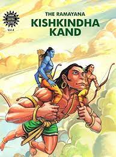

|  |
Kishkindha Kand primarily focuses on the story of vanara King Vali (also known as Bali). It is based in the ape citadel, Kishkindha. Rama and Lakshmana meet Hanuman, the greatest devotee to Lord Rama. In Kishkindha Kanda, Rama helps Sugriva by defeating his elder brother Vali, due to which Sugriva regains the hold of his kingdom of Kishkindha. Rama helps Sugriva so that he in return helps him to find Sita.
However soon Sugriva forgets his promises to Rama. The wife of former king Vali, Tara very cleverly reminds Sugriva of them and convinces him to help Rama. She also stops enraged Rama from destroying the citadel. Finally, Sugriva sends search armies of vanars to all the corners of the Earth. The armies from north, west and east return with no answer. The southern army, under the exquisite leadership of Angad and Lord Hanuman discover from a vulture named Sampati that Sita is taken to Lanka.
|
|---|
| Back | Home Page |